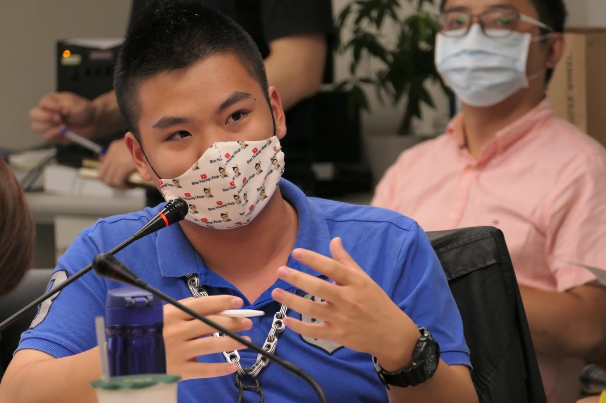
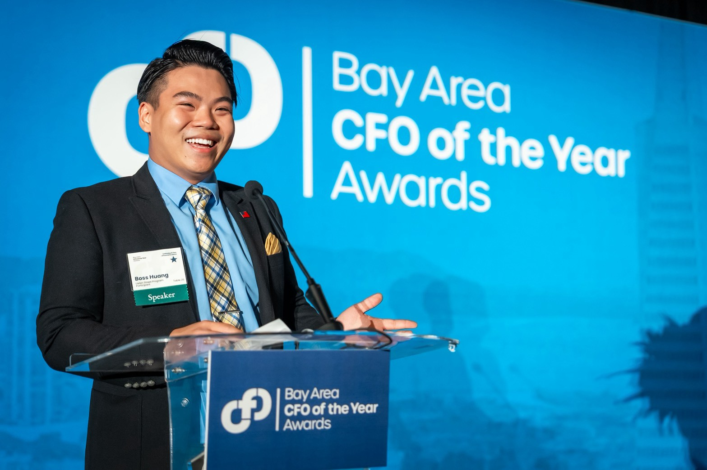

YOUTH LEADERSHIP · TAIWAN & SAN FRANCISCO
Finding support.
Building change.
From student-led programs in Taiwan to youth advocacy in SF, Boss is working to make opportunities easier to find and help young people shape their communities.

Boss Huang enjoys cooking, baking, taking photos, and exploring San Francisco with friends old and new. Alongside those interests is a commitment that began in childhood: bringing young people together and creating opportunities for them.
WHERE HE STARTED
Making space for other young people
Boss grew up in New Taipei, Taiwan. He started volunteering at four and homeschooling at eight, with room to follow his interests in education, sustainability, and technology.
At twelve, he started his own volunteer team, Soft Skills Union. The team organized student-led learning programs, including bilingual STEAM camps for rural students. Together, they raised funds, planned activities, and ran the programs.
Later, Boss became the youngest member of New Taipei’s Youth Affairs Committee. Working with fellow commissioners and city staff, he helped make the case for a NT$130 million budget to establish a dedicated Youth Affairs Bureau. It gave him experience turning young people’s priorities into proposals, funding, and programs.

FINDING SUPPORT IN SAN FRANCISCO
A community to turn to
Boss moved to San Francisco in 2023 to study at Minerva University. A period of financial hardship made those early months uncertain. Through a school-counselor connection, he learned about Larkin Street Youth Services.
Support from Larkin Street helped him continue his education and find opportunities in employment and the arts. His experience of navigating that support now informs his interest in making resources easier for other young people to find.
LEADING HERE, TOO
Listening, making, and showing up
Through YouthForce, Boss joined Larkin Street’s marketing team. He wrote youth stories, filmed and edited interviews for Performing Arts Night, and developed a campaign about the opportunities young people pursue with support.
The work gave him practice telling stories with care: listening, asking permission, and keeping people’s interests and ambitions in view. He also spoke at the Bay Area CFO of the Year Awards, sharing his experience with an audience that could help support more opportunities for youth.
Boss is also a member of HYPE Center’s Youth Advisory Board. He has helped put together a heritage event with other board members and is continuing to explore where he can contribute.

WHAT COMES NEXT
Helping people find a way in
At Minerva, where he studies computer science and business, Boss’s EcoCoin capstone explores what gets people to participate in community cleanups. It is an ongoing effort to test the assumptions behind an idea before building further.
With 7x7, he is bringing his experience as a young person, organizer, and builder to a resource map and a space for youth stories. People can recommend resources, flag outdated information, and choose what they want to share about their own lives.
His aim is to help more young people find useful support and take part in shaping their communities. Building 7x7 is one way he is putting that aim into practice.
YOUR STORY HAS A PLACE HERE
What’s helped you find your way?
Share an experience, a piece of art, or an idea with the 7x7 team. You choose what you share and how you’re named.
A nomination is not consent to publish. You can use the resource guide without sharing a story.